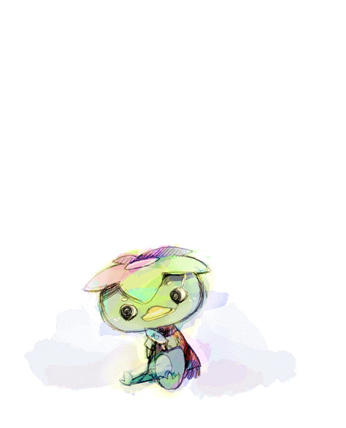

每個人眼中的世界都不同。
但這些不同的世界……太擠了。


好痛苦。
肺很疼痛，使勁掙扎的手試圖抓住些什麼。
在刀落下之前，河童卻更迅速地退開，不見蹤影。
這條河川原本有這麼深嗎？千蒔咬牙，抬頭試圖尋找水面的位置。
在意識斷去之前，她終於抓住了什麼，用僅剩的力氣將刀刃插進石縫，將自己撐離水面。
把自己拖上了岸。吸飽水份的衣服沉重地攤在地上，她撐著身子，使勁咳掉嘴裡的水，濕漉的頭髮黏在臉頰及頸上，過多的水分不停墜落於地。
「還好？」一貫的語調，玖見警覺地望著四周。
「還可以，姑且還在呼吸。」千蒔大口地吐了口氣，瀏海遮住了視線，有點麻煩，
「信介呢？」
語落，孩子的聲音便從對岸傳來。
四歲孩童的身形，力氣卻奇大無比。
只見河童歇斯底里地纂著信介的脖子，河水變得湍急，上升的水位嗆了男孩好幾口水。
信介痛苦地反抓著對方的手，試圖擺開束縛，開開合合的嘴欲說些什麼。
「可惡。」水流過於湍急，千蒔必須退幾步到較高的岩石面以免被洶遠的河水捲走。
無法逼近，情勢緊急的情況下……她想也不想地就抽出前輩的槍枝。
「喂！」
無視前輩的聲音，她半瞇起眼。
只能傷害了嗎？……但這樣貿然開槍的話，恐怕會傷到男孩。
「……！」撞擊而起的水花和閃爍的陽光擾亂了她的視線，她專注地緩住呼吸，試圖穩住槍枝並對準目標。然而在細看後，她的動作卻忽然一滯，眼中閃過一絲驚訝。
河童不躲、卻也沒有停下動作。
牠仰著頭，無聲地張開嘴，讓人不禁以為牠是要一口撕裂男孩的頭。然而事實則不然。
牠只是張著嘴，什麼也沒有做、甚至沒有在移動半步，猛烈拍打的水花甚至幾乎蓋住了牠的聲音。
——還給我！
「牠的樣子……」就像在哭。
什麼也不顧、撕心裂肺的，痛哭。
水流的速度並沒有緩下，河童像人類一般地仰頭痛哭，彷若不需透過空氣，清晰的且悲痛的聲音就這樣直敲進腦裡。
*還給我！還給我啊……
我恨你們。
我恨你們、我恨你們、我恨你們！*
驀地，細小的聲音傳進了河童耳裡，就像跌在空蕩房裡的一根冰針。
「……逃走吧。」信介咳了幾聲，低聲說著。
「！」河童向下看向聲音的來源。
男孩慘白臉色讓他顯得更為狼狽，冰冷的水珠自髮梢不停滴落。
他將手覆在那本可至自己於死，卻遲遲沒下痛手的冰涼蛙蹼上，
「不會怪你的，所以——」
河童的眼睛緩緩瞠大，這個人……
「所以，你也能原諒我們嗎？」
原諒我們因為害怕先殺害了你的家人，原諒我們的無知、以及因無知而產生的造謠。
不知道是不是因佈上的水霧，男孩的眼神就像是全然不同的人。
一個似曾相識，卻不該再次遇見的人。
妖怪停了下來，洶湧湍急的水濤像是失去指引般因重力而重重跌回水平面。
嘩啦啦的聲響，卻蓋不住河童那自從開開合合的嘴中吐出的猶豫音節。
「阿、澈？」
——名字，屬於前些日子溺水死去的少年，早川澈。
*——在村莊裡他是十足的焦點，每個孩子都老待在他身旁。
——只要他走出家門，必定引起軒然大波，孩子們就蜂擁而上，笑鬧著。
——大人們的話題也總圍著他打轉。*
與偷魚妖怪為友的人類孩子。
聞言、阿澈笑了，帶點哀傷、抱歉、和自責。
「……對不起呢。」
「讓你失去的家人，如今家園也……」
原來如此，是靈體附在親人身上，來完願嗎？
聽到這裡千蒔垂下眼簾。
唯一能守護的地方只剩這條河川，於是歇斯底里地不讓任何人接近……嗎？
『咖搭。』
趁這個和緩的空檔，忽地她手中的東西被一把奪走。
高速磨擦空氣的聲響讓她下意識地半瞇起眼，空氣一瞬間凝滯了，她抬頭看向前方。
世界頓時失去了聲音，只見妖怪緩慢地向後倒去、接著是重物墜落水面的聲響。
——嘩啦。
「前輩！」她失聲低喊了出來。
每個人眼中的世界都不同。
但這些不同的世界……太擠了。
只見玖見穩住了手上握的槍枝，半瞇起眼。
「查看生死。」
槍響已過，然而硝煙味似乎還在空氣蔓延。
灼燒的讓人難受。
╳× ×× ×╳
「謝謝大人們。」抱著還在哭泣的信介，村中的人們頻頻向他們道謝，「這樣的話，川中的冤魂終於能安息了。」
「不，這是我們應該做的。」玖見不冷不熱地說著，彷若這就是背好的台詞。
冤魂……？
「喂。」千蒔的頭垂的很低，陰影讓人看不清楚她的表情。
「一等兵。」玖見看了對方一眼，然而他知道這明顯不足以制止對方。
千蒔抬頭望向前方，不冷不熱的語調，黑色的眸子映照著眼前的人們。
「……你們之中，到底有誰好好叫過阿澈的名字？」
與妖怪為友，因而被當作異端的人類。
攔截了對方接下來想說的話，千蒔不慢不快地繼續說道。
「墨田川的河童，不只一隻。」
她掃視了一周，「啊、不過你們大概也早就知道了。」
被奪去家人的，是誰？
「好好去補你們的魚吧，豐收。」
她一個側身踩上馬鐙，翻坐上去，逕自地轉往歸途的方向。
在玖見開槍之後，她先迅速查看了信介的狀況。確定他只是驚嚇過度而昏了過去後，便滑下岩面，看那受傷的妖怪。
玖見特意避開了要害，為的只是讓妖怪詐死，讓信介把看見的『事實』帶回去。
他們談妥了條件。不，與其說條件，不如說更像是單方面的施壓呢。
人類不會善罷干休，他們目前唯一能做的安頓，就是讓牠先離開這塊是非之地。
「可是還能搬到哪呢？」妖怪這樣哭著，「我已經一無所有了啊。」
河水潺潺，陽光很好而波光粼粼，明亮得令人眼角發疼。
千蒔閉上了眼，深深地、緩慢地吸了口氣，跟上的前輩冷淡斥責了聲。
「太衝動了。」
「前輩也是呢，彼此彼此。」
在那之後，墨田川河童的下落，已無人知曉。
——異聞三（完）